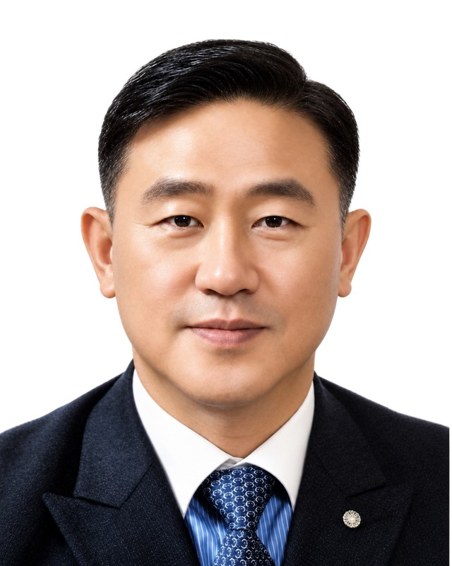

상속세는 이제
일부의 세금이 아닙니다.
일부의 세금이 아닙니다.
기준은 1997년에 정해졌고,
재산의 값은 계속 움직였습니다.
상속세 일괄공제 5억원은
1997년에 도입됐습니다.
그해 2,805명이던 과세 인원은
2024년 21,193명이 됐습니다.
그래서 VALUMA의 첫 질문은
얼마를 내느냐가 아니라
무엇을 먼저 정하느냐입니다.
회사를 키우고 자산을 모으는 동안,
그것을 어떻게 남길지는 늘 다음 일이 됩니다.
오늘 급한 일이 아니기 때문입니다.
상속과 증여, 세금, 회사의 지분, 대표님의 은퇴는
서로 이어져 있습니다.
하나를 따로 정하면 다른 하나에서 값을 치르게 됩니다.
남기는 일은 미룰수록 고를 수 있는 길이 줄어듭니다.
VALUMA는 그 설계를 오늘 시작합니다.
상속, 증여, 세금, 투자, 대표님의 은퇴 계획을
각각 다른 곳에 물으면 답도 따로 돌아옵니다.
그 답들을 하나로 맞추는 일은
결국 대표님 몫으로 남습니다.
VALUMA는 네 사람이 한 자리에서
같은 자료를 보고,
하나의 계획으로 정리해 드립니다.


자산을 넘겨줄 준비를 시작하실 때 무엇부터 보아야 하는지,
저희가 일하며 붙들고 있는 생각을 짧은 글로 적어 둡니다.
기준은 1997년에 정해졌고,
재산의 값은 계속 움직였습니다.
상속세 일괄공제 5억원은
1997년에 도입됐습니다.
그해 2,805명이던 과세 인원은
2024년 21,193명이 됐습니다.
그래서 VALUMA의 첫 질문은
얼마를 내느냐가 아니라
무엇을 먼저 정하느냐입니다.
기한은 여섯 달이고,
재산은 바로 꺼내 쓸 수 없습니다.
상속세는 상속이 시작된 달의 말일부터
6개월 안에 신고하고 내야 합니다.
그런데 상속재산의 47.6%는 건물,
21.2%는 토지입니다.
그래서 무엇으로 낼지를
얼마를 낼지와 같은 자리에서 정합니다.
한쪽에서 내린 결정의 값은
다른 쪽에서 치르게 됩니다.
대표님의 급여와 배당, 퇴직금과 지분은
회사 장부와 개인 재산 양쪽에 걸쳐 있습니다.
회사만 보고 정한 것이 개인의 세금을 바꾸고,
개인만 보고 정한 것이 회사의 지분을 바꿉니다.
그래서 네 사람이
같은 자료를 함께 봅니다.
무엇을, 누구에게, 언제 넘길지가 한 장에 정리됩니다.
넘기는 방법마다 세금이 어떻게 달라지는지, 결정하기 전에 나란히 놓고 봅니다.
회사에 쌓인 것과 대표님 개인의 것을 구분하고, 옮기는 길을 설계합니다.
법이 바뀌고 가족의 사정이 달라질 때마다 계획을 다시 맞춥니다.
무엇을 남기고 싶으신지부터 듣겠습니다.